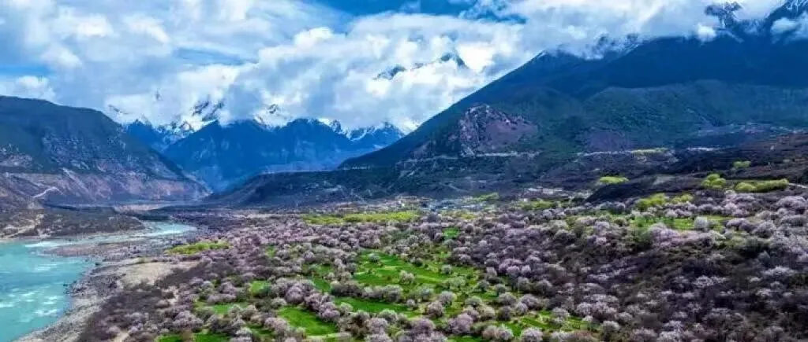
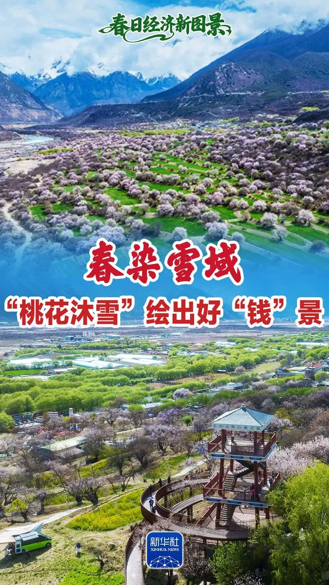
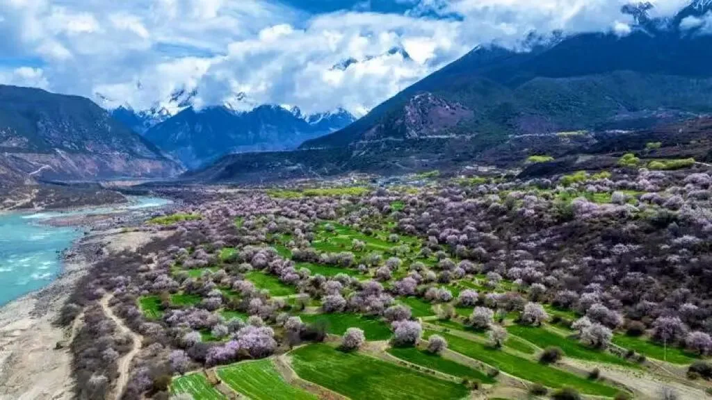
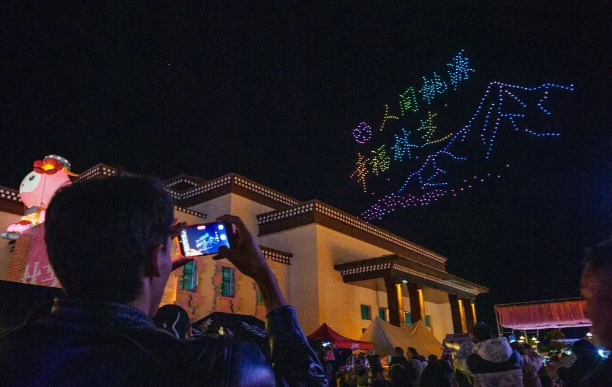
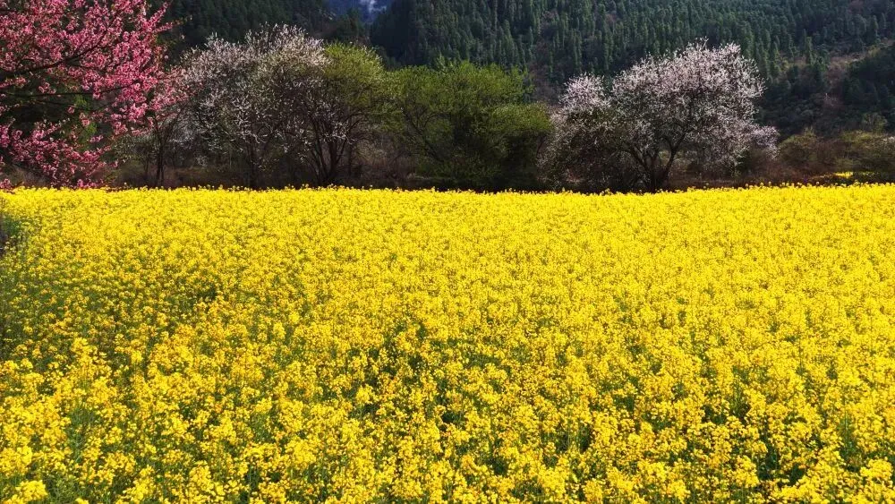
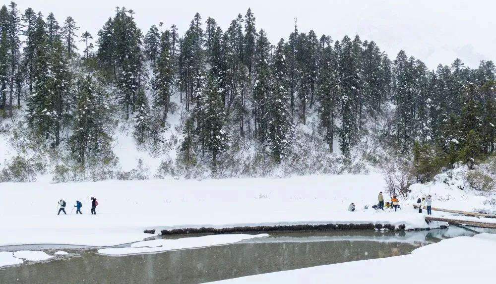
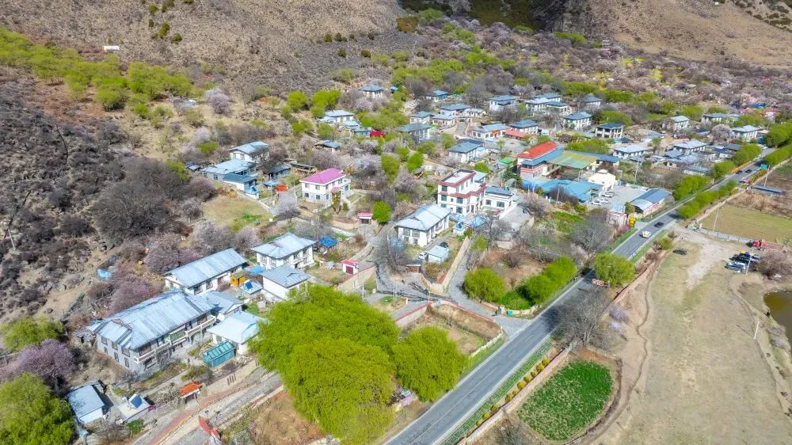
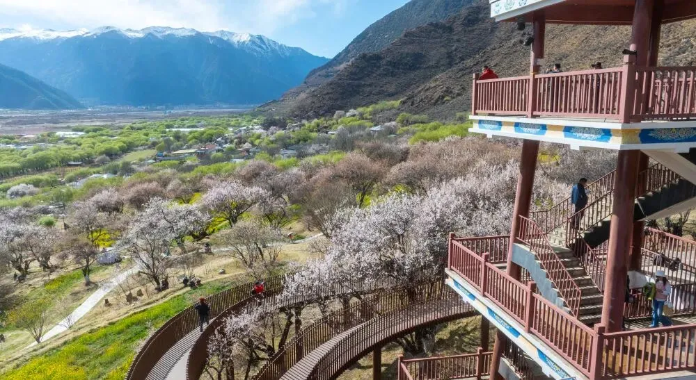
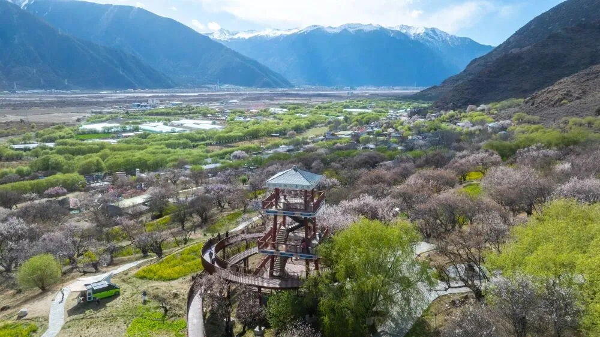

春染雪域，“桃花沐雪”绘出好“钱”景
文化西藏 ;)


四月的青藏高原，春天的脚步还在吃力地爬坡。但是，在有“雪域江南”之称的林芝，粉的桃花、黄的油菜花，一团团、一片片，镶嵌在雪线、蓝天、白云之下，春意盎然，“钱”景正好。

这是林芝市南迦巴瓦峰下雅鲁藏布大峡谷内的桃花景色。新华社记者 丁增尼达 摄
林芝是西藏开春最早的地方。这片平均海拔3100米左右的土地，4月初的微风中仍裹挟着些许寒意。但春潮已如约翻过垭口，顺着山脊，在峡谷间奔涌，把山谷染成一片粉黛。
百里桃林沐雪盛放，粉霞漫卷河谷山川，远瞰犹如精心雕琢却又恣意铺展的粉彩画卷。在喜马拉雅山脉的褶皱里，这股“温柔”而向上的“野性”，昭示着西藏最早的春天已经到来。

林芝第二十三届桃花旅游文化节开幕式上的无人机表演。新华社记者 丁增尼达 摄
随着西藏林芝第二十三届桃花旅游文化节拉开帷幕，一种不同于江南烟雨的“春日经济”正在这片高地生长。从山野间肆意盛放的自然野趣，到人人可感可享的春日体验，林芝桃花让高原之春真正走进了生活。

西藏林芝市波密县易贡乡，油菜花与桃花迎春绽放。新华社记者 普布次仁 摄
高原的春天，不止于遍野的花色，还在于不期而遇的春雪。
在林芝市波密县的白普隆沟，来自赣、浙、川等地的游客在没过脚踝的春雪中踏雪前行。过去，这份冷冽与野性被视为生存的艰辛；如今，它成了沉浸式深度体验的“稀缺资源”。

游人在白普隆沟牧场感受雪景。新华社记者 普布次仁 摄
“以前我们赶着牛进去，现在带着人进去，既能听到有趣的故事，还能获得收入，可好了。”当地村民桑多说。自去年5月白普隆沟管理规范化后，村民轮流带着游客进沟徒步，自备烤饼、牛肉，为游客带来一场地道的“放牧体验”。
波密县白玉村党支部书记多吉占堆告诉记者，仅一条白普隆沟，一年便能为村子带来近200万元收益，“去年来了8000多人，大家的收入比过去高多了。”
高原的春，来得越来越快，多元发展的劲儿也越来越大。

林芝市巴宜区嘎拉村风景。 新华社记者 丁增尼达 摄
从“种什么吃什么”的传统自给，到“一地一特色、一产一品牌”的多元联动，高原乡村经济正经历深度重构。
素有“林芝桃花源”之称的嘎拉村，是真巴村下辖的自然村，每年吸引大量游客观赏桃花。村民米玛多吉说，今年景区还在探索长线发展，让“季抛”桃花源变成全年花海，未来还会种植向日葵等观赏作物。

林芝市巴宜区嘎拉村风景。 新华社记者 丁增尼达 摄
数据显示，嘎拉村全村不过150余人，却有着上千棵百年以上树龄的野生桃树，依靠桃花相关产业的村集体收入达350余万元，占村集体收入超四成。山坡上盛放千年的野生桃花，正深刻改变着数以千计高原家庭的命运。

西藏林芝市巴宜区嘎拉村风景。 新华社记者 丁增尼达 摄
从踏雪徒步放牧的沉浸式体验，到云雾茶香溢出深闺的致富故事；从高原特色物产走出深山，到“桃花经济”延伸至全年，高原春日正从单一赏花向文旅融合、农旅共生的全新图景加速转变。坚守高原的农牧民和奔赴远方的旅行者，双向奔赴、彼此成就，共同唤醒了这场烂漫春光。

使用完整服务
On the Qinghai-Tibet Plateau in April, spring is still struggling to climb the slopes. But in Nyingchi, known as the "Jiangnan of the Snowland," pink peach blossoms and yellow rapeseed flowers cluster in patches beneath the snowline, blue sky, and white clouds — full of spring vitality and promising economic prospects.
Peach blossom scenery within the Yarlung Zangbo Grand Canyon beneath Mount Namjagbarwa in Nyingchi. Photo by Xinhua News Agency reporter Dingzeng Nida.
Nyingchi is the first place in Tibet to welcome spring. On this land with an average elevation of around 3,100 meters, the early April breeze still carries a hint of chill. Yet the spring tide has already arrived over the mountain pass, rushing along the ridges and through the valleys, dyeing the landscape in shades of pink.
For a hundred li, peach forests bloom amidst snow, pink clouds spreading across valleys and rivers. From afar, it looks like a meticulously crafted yet freely unfurled pastel scroll. Within the folds of the Himalayas, this gentle yet upward "wildness" heralds the arrival of Tibet's earliest spring.
Drone performance at the opening ceremony of the 23rd Nyingchi Peach Blossom Tourism and Culture Festival. Photo by Xinhua reporter Dingzeng Nida.
As the 23rd Nyingchi Peach Blossom Tourism and Culture Festival kicked off, a "spring economy" distinct from the misty rains of Jiangnan is taking root on this highland. From the untamed beauty of wild blossoms across the mountains to the spring experiences accessible to all, Nyingchi's peach blossoms have brought the plateau's spring into people's daily lives.
In Yigong Township, Bomê County, Nyingchi, Tibet — rapeseed flowers and peach blossoms bloom together in spring. Photo by Xinhua reporter Pubu Ciren.
Spring on the plateau is not just about blossoms everywhere, but also about the unexpected spring snow.
At Bailonggou in Bomê County, Nyingchi, visitors from Jiangxi, Zhejiang, Sichuan and elsewhere trek through spring snow ankle-deep. In the past, this cold and wildness was seen as hardship; today, it has become a "scarce resource" for immersive, in-depth experiences.
Visitors experiencing the snowscape at the Bailonggou pasture. Photo by Xinhua reporter Pubu Ciren.
"Before, we drove our cattle in; now we bring people in. They get to hear interesting stories, and we earn income — it's wonderful," said Sangduo, a local villager. Since the management of Bailonggou was standardized in May last year, villagers have taken turns leading tourists on hikes into the valley, bringing homemade flatbreads and beef for an authentic "herding experience."
Duojizhandui, Party branch secretary of Baiyu Village in Bomê County, told reporters that Bailonggou alone brings nearly 2 million yuan in annual income to the village. "Last year, over 8,000 people came. Everyone's income is much higher than before."
Spring on the plateau is arriving faster than ever, and the momentum of diversified development is growing stronger.
Scenery of Gala Village, Bayi District, Nyingchi. Photo by Xinhua reporter Dingzeng Nida.
From the traditional self-sufficiency of "grow what you eat" to the diversified linkage of "one place, one specialty; one industry, one brand," the rural economy of the plateau is undergoing a profound restructuring.
Gala Village, known as the "Peach Blossom Paradise of Nyingchi," is a natural village under Zhenba Village, attracting large numbers of tourists each year to admire the peach blossoms. Villager Mimaduojie said that this year the scenic area is exploring long-term development, transforming the seasonal peach blossom paradise into a year-round flower sea, with plans to plant sunflowers and other ornamental crops in the future.
Scenery of Gala Village, Bayi District, Nyingchi. Photo by Xinhua reporter Dingzeng Nida.
Scenery of Gala Village, Bayi District, Nyingchi, Tibet. Photo by Xinhua reporter Dingzeng Nida.
Data shows that Gala Village, with a population of just over 150, is home to more than a thousand wild peach trees over a century old. The village's collective income from peach blossom-related industries exceeds 3.5 million yuan, accounting for over 40% of total village collective revenue. The wild peach blossoms that have bloomed on the hillsides for a thousand years are profoundly changing the fate of thousands of plateau families.
From immersive snow-trekking herding experiences to the story of cloud-mist tea fragrance emerging from seclusion to create prosperity; from highland specialty products reaching beyond the mountains to the "peach blossom economy" extending year-round — the plateau spring is rapidly transforming from simple flower-viewing into a new landscape of cultural tourism integration and agricultural-tourism symbiosis. The farmers and herders who hold fast to the plateau and the travelers who journey to the distant horizon — they meet each other halfway, achieving mutual success, together awakening this splendid spring.